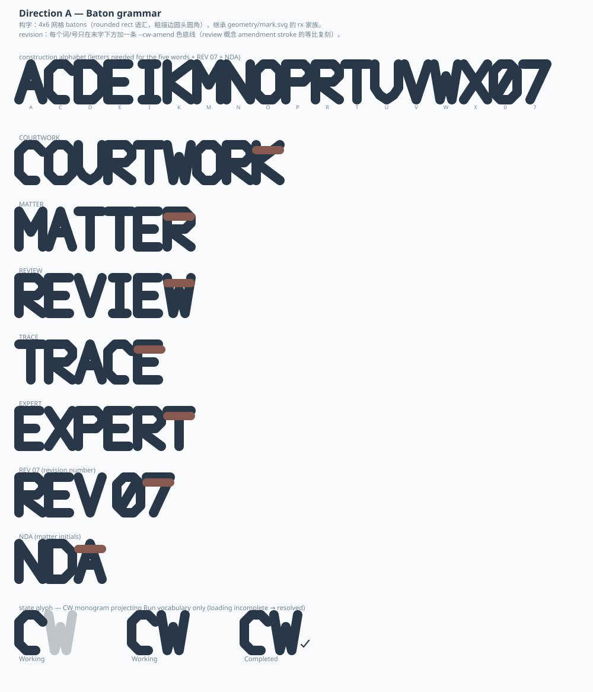
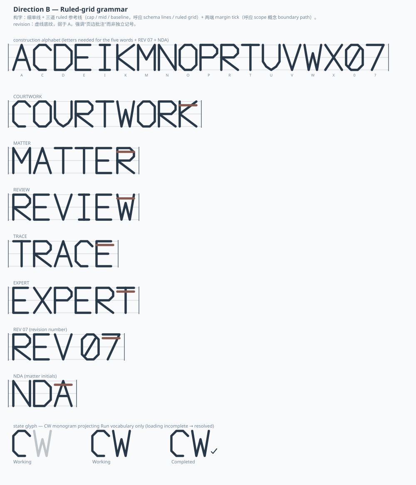
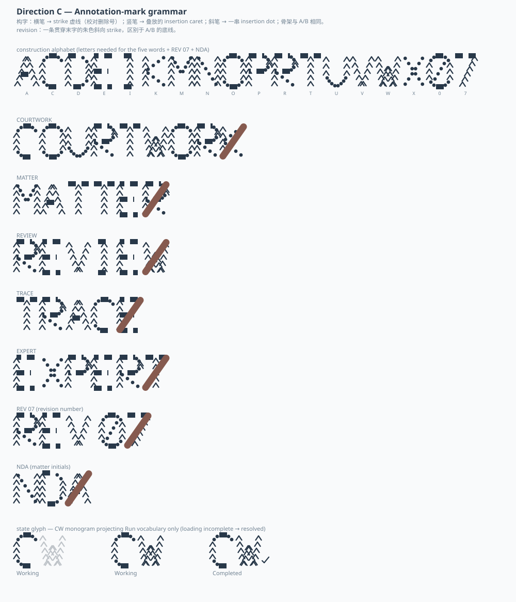

同一份 invariant 骨架（4×6 网格、直线段构字、brand 既有 8 词表与 amend 色）在三种笔画材质下的呈现。三栏同尺寸、同内容（同一 alphabet / 同五词 / REV 07 / NDA / Working→Completed 序列），只换一个变量：笔画怎么画。纯静态 SVG，无外部字体、无外链资源、无脚本。



详见 explore/ex-gi1-generative-identity.md：invariant / variation 草案、确定性生成规范、Facet 范式流程、载体边界与待裁定清单。本页不代表任何方向已被采纳。